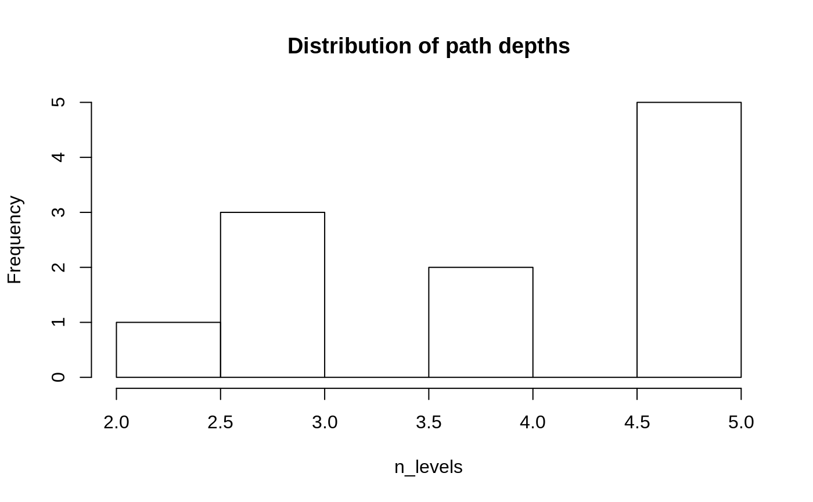

This vignette describes the functions that have not yet been described in other vignettes.
set.seed(53653815)
(paths <- kwb.pathdict::random_paths(4, min_chars = 5, max_elements = 3))
#> [1] "contain/surface/woman/plain.R"
#> [2] "contain/surface/woman/don_t.jpg"
#> [3] "contain/surface/exact/receive/order.R"
#> [4] "contain/surface/exact/receive/range.doc"
#> [5] "contain/surface/exact/cotton/white.R"
#> [6] "contain/surface/exact/cotton/decide.xls"
#> [7] "contain/surface/exact/until.pdf"
#> [8] "contain/party/spread/character.doc"
#> [9] "contain/party/spread/afraid.xls"
#> [10] "contain/party/spread/ready.jpg"
#> [11] "contain/party/track/those.png"
#> [12] "contain/party/track/after/process.doc"
#> [13] "contain/party/track/engine.jpg"
#> [14] "contain/vowel.png"The function data_frame_to_paths() converts a subdirectory matrix that has been converted to a data frame back to the paths by pasting all non-empty columns with slashes. Paths that do not have the maximum depth must have empty values "" (and not NA) in the last columns, otherwise the string NA will appear in the paths.
# Create subdirectory matrix as data frame
(subdir_data <- kwb.file::to_subdir_matrix(paths, result_type = "data.frame"))
#> V1 V2 V3 V4 V5
#> 1 contain surface woman plain.R
#> 2 contain surface woman don_t.jpg
#> 3 contain surface exact receive order.R
#> 4 contain surface exact receive range.doc
#> 5 contain surface exact cotton white.R
#> 6 contain surface exact cotton decide.xls
#> 7 contain surface exact until.pdf
#> 8 contain party spread character.doc
#> 9 contain party spread afraid.xls
#> 10 contain party spread ready.jpg
#> 11 contain party track those.png
#> 12 contain party track after process.doc
#> 13 contain party track engine.jpg
#> 14 contain vowel.png
# Reconstruct the paths from this data frame
paths_reconstructed <- kwb.pathdict:::data_frame_to_paths(subdir_data)
# Check that the paths have not changed
identical(paths_reconstructed, paths)
#> [1] TRUEThe function to_placeholder() converts a string to a placeholder <string>.
kwb.pathdict:::to_placeholder("abc")
#> [1] "<abc>"
(placeholders <- kwb.pathdict:::to_placeholder(c("abc", 123)))
#> [1] "<abc>" "<123>"The function is_placeholder() checks whether a string looks like a <placeholder>:
kwb.pathdict:::is_placeholder(placeholders)
#> [1] TRUE TRUE
kwb.pathdict:::is_placeholder("abc")
#> [1] FALSE
kwb.pathdict:::is_placeholder("[abc]")
#> [1] FALSE
kwb.pathdict:::is_placeholder(c("<abc>", "<def>", "ghi", "<jkl>"))
#> [1] TRUE TRUE FALSE TRUE
kwb.pathdict:::is_placeholder("<abc>def")
#> [1] FALSE
kwb.pathdict:::is_placeholder("<abc><def>")
#> [1] FALSE
kwb.pathdict:::is_placeholder("<>")
#> [1] FALSEThe function to_dictionary_key creates the name for a key in a dictionary, consisting of a prefix (“p” by default) and a number, given in the hexadecimal system:
kwb.pathdict:::to_dictionary_key(1:17)
#> [1] "p1" "p2" "p3" "p4" "p5" "p6" "p7" "p8" "p9" "pA" "pB"
#> [12] "pC" "pD" "pE" "pF" "p10" "p11"
kwb.pathdict:::to_dictionary_key(1:17, leading_zeros = TRUE)
#> [1] "p01" "p02" "p03" "p04" "p05" "p06" "p07" "p08" "p09" "p0A" "p0B"
#> [12] "p0C" "p0D" "p0E" "p0F" "p10" "p11"The function to_dictionary() creates a “dictionary” for a given vector of input strings. Each unique input string is given a short name by which ich can be looked up in the returned dictionary. The dictionary is a list with the unique input strings as values and the assigned short names as keys. The entries in the dictionary are sorted decreasingly by the “importance” of the corresponding input string, i.e. the product of frequency and string length of the input string.
dict <- kwb.pathdict:::to_dictionary(dirname(paths))
# Show the dictionary in the form of a data frame
kwb.pathdict:::named_vector_to_data_frame(unlist(dict))
#> name value
#> 1 a1 contain/party/spread
#> 2 a2 contain/surface/exact/receive
#> 3 a3 contain/surface/exact/cotton
#> 4 a4 contain/surface/woman
#> 5 a5 contain/party/track
#> 6 a6 contain/party/track/after
#> 7 a7 contain/surface/exact
#> 8 a8 containOnce you have defined a dictionary you can replace the original strings with placeholders that correspond to the short names in the dictionary:
The short paths can be resolved back to the original paths using the resolve() function from the kwb.utils package:
kwb.utils::resolve(short_paths, dict)
#> [1] "contain/surface/woman" "contain/surface/woman"
#> [3] "contain/surface/exact/receive" "contain/surface/exact/receive"
#> [5] "contain/surface/exact/cotton" "contain/surface/exact/cotton"
#> [7] "contain/surface/exact" "contain/party/spread"
#> [9] "contain/party/spread" "contain/party/spread"
#> [11] "contain/party/track" "contain/party/track/after"
#> [13] "contain/party/track" "contain"
#> Distribution of path depths:
#> n_levels
#> 2 4 5
#> 1 8 5
#> i = 1, n = 14...
#> utils::head(y):
#> contain
#> 98
#> i = 2, n = 14...
#> utils::head(y):
#> x
#> contain/surface contain/party contain/vowel.png
#> 105 78 17
#> i = 3, n = 13...
#> utils::head(y):
#> x
#> contain/surface/exact contain/party/spread contain/party/track
#> 105 60 57
#> contain/surface/woman
#> 42
#> i = 4, n = 13...
#> utils::head(y):
#> x
#> contain/surface/exact/receive contain/surface/exact/cotton
#> 58 56
#> contain/party/spread/character.doc contain/party/spread/afraid.xls
#> 34 31
#> contain/surface/exact/until.pdf contain/surface/woman/don_t.jpg
#> 31 31
#> i = 5, n = 5...
#> utils::head(y):
#> x
#> contain/surface/exact/cotton/decide.xls
#> 39
#> contain/surface/exact/receive/range.doc
#> 39
#> contain/party/track/after/process.doc
#> 37
#> contain/surface/exact/receive/order.R
#> 37
#> contain/surface/exact/cotton/white.R
#> 36
#> path score length count score2
#> 1 contain/surface/exact 105 21 5 85
#> 2 contain/surface 105 15 7 77
#> 3 contain/surface/exact/receive 58 29 2 50
#> 4 contain 98 7 14 42
#> 5 contain/surface/exact/cotton/decide.xls 39 39 1 35
#> i key score count length path score2
#> 1 p1 105 5 21 contain/surface/exact 85
#> path score length count score2
#> 1 contain/surface 105 15 7 77
#> 2 contain 98 7 14 42
#> 3 contain/surface/exact/cotton/decide.xls 39 22 1 18
#> 4 contain/surface/exact/receive 58 12 2 16
#> i key score count length path score2
#> 2 p2 105 7 15 contain/surface 77
#> path score length count score2
#> 1 contain 98 7 14 42
#> 2 contain/surface/exact/cotton/decide.xls 39 11 1 7
#> 3 contain/surface/exact/receive 58 1 2 -6
#> i key score count length path score2
#> 3 p3 98 14 7 contain 42
#> path score length count score2
#> 1 contain/surface/exact/cotton/decide.xls 39 8 1 4
#> 2 contain/surface/exact/receive 58 -2 2 -12
#> i key score count length path score2
#> 4 p4 39 1 8 contain/surface/exact/cotton/decide.xls 4
#> path score length count score2
#> 1 contain/surface/exact/receive 58 -2 2 -12
#> i key score count length path score2
#> 5 p5 58 2 -2 contain/surface/exact/receive -12
result
#> $p1
#> [1] "contain/surface/exact"
#>
#> $p2
#> [1] "contain/surface"
#>
#> $p3
#> [1] "contain"
#>
#> $p4
#> [1] "contain/surface/exact/cotton/decide.xls"
#>
#> $p5
#> [1] "contain/surface/exact/receive"At the start of get_dictionary_one_by_one() the function get_subdir_frequencies() is called. This function can be given a vector of path strings as input. For each possible depth in the path tree all different sub-paths are determined and ordered by their “importance”, i.e. by the product of frequency and path length in number of characters. By default, only the most important path per depth is returned:
frequencies <- kwb.pathdict:::get_subdir_frequencies(paths = paths, dbg = FALSE)
#> Splitting paths ... ok. (0.00s)
# Define helper function for output
print_frequencies <- function(f) {
for (i in seq_along(f)) {
message("=== depth: ", i)
print(kwb.pathdict:::named_vector_to_data_frame(f[[i]]))
}
}
print_frequencies(frequencies)
#> === depth: 1
#> name value
#> 1 contain 98
#> === depth: 2
#> name value
#> 1 contain/surface 105
#> === depth: 3
#> name value
#> 1 contain/surface/exact 105
#> === depth: 4
#> name value
#> 1 contain/surface/exact/receive 58
#> === depth: 5
#> name value
#> 1 contain/surface/exact/cotton/decide.xls 39To return all different paths, set first.only = FALSE:
all_frequencies <- kwb.pathdict:::get_subdir_frequencies(
paths = paths, first.only = FALSE, dbg = FALSE
)
#> Splitting paths ... ok. (0.00s)
print_frequencies(all_frequencies)
#> === depth: 1
#> name value
#> 1 contain 98
#> === depth: 2
#> name value
#> 1 contain/surface 105
#> 2 contain/party 78
#> 3 contain/vowel.png 17
#> === depth: 3
#> name value
#> 1 contain/surface/exact 105
#> 2 contain/party/spread 60
#> 3 contain/party/track 57
#> 4 contain/surface/woman 42
#> === depth: 4
#> name value
#> 1 contain/surface/exact/receive 58
#> 2 contain/surface/exact/cotton 56
#> 3 contain/party/spread/character.doc 34
#> 4 contain/party/spread/afraid.xls 31
#> 5 contain/surface/exact/until.pdf 31
#> 6 contain/surface/woman/don_t.jpg 31
#> 7 contain/party/spread/ready.jpg 30
#> 8 contain/party/track/engine.jpg 30
#> 9 contain/party/track/those.png 29
#> 10 contain/surface/woman/plain.R 29
#> 11 contain/party/track/after 25
#> === depth: 5
#> name value
#> 1 contain/surface/exact/cotton/decide.xls 39
#> 2 contain/surface/exact/receive/range.doc 39
#> 3 contain/party/track/after/process.doc 37
#> 4 contain/surface/exact/receive/order.R 37
#> 5 contain/surface/exact/cotton/white.R 36The function to_frequency_data() is called next within get_dictionary_one_by_one(). It converts the list returned by get_subdir_frequencies() to a data frame.
# Convert frequency list to data frame
(frequency_data <- kwb.pathdict:::to_frequency_data(frequencies))
#> path score length count
#> 1 contain/surface 105 15 7
#> 2 contain/surface/exact 105 21 5
#> 3 contain 98 7 14
#> 4 contain/surface/exact/receive 58 29 2
#> 5 contain/surface/exact/cotton/decide.xls 39 39 1
(all_frequency_data <- kwb.pathdict:::to_frequency_data(all_frequencies))
#> path score length count
#> 1 contain/surface 105 15 7
#> 2 contain/surface/exact 105 21 5
#> 3 contain 98 7 14
#> 4 contain/party 78 13 6
#> 5 contain/party/spread 60 20 3
#> 6 contain/surface/exact/receive 58 29 2
#> 7 contain/party/track 57 19 3
#> 8 contain/surface/exact/cotton 56 28 2
#> 9 contain/surface/woman 42 21 2
#> 10 contain/surface/exact/cotton/decide.xls 39 39 1
#> 11 contain/surface/exact/receive/range.doc 39 39 1
#> 12 contain/party/track/after/process.doc 37 37 1
#> 13 contain/surface/exact/receive/order.R 37 37 1
#> 14 contain/surface/exact/cotton/white.R 36 36 1
#> 15 contain/party/spread/character.doc 34 34 1
#> 16 contain/party/spread/afraid.xls 31 31 1
#> 17 contain/surface/exact/until.pdf 31 31 1
#> 18 contain/surface/woman/don_t.jpg 31 31 1
#> 19 contain/party/spread/ready.jpg 30 30 1
#> 20 contain/party/track/engine.jpg 30 30 1
#> 21 contain/party/track/those.png 29 29 1
#> 22 contain/surface/woman/plain.R 29 29 1
#> 23 contain/party/track/after 25 25 1
#> 24 contain/vowel.png 17 17 1The function rescore_and_reorder_frequency_data() takes a data frame with columns length and count as input. It calculates score2 = (length - placeholder_size) * count and orders the data frame decreasingly by this score.
kwb.pathdict:::rescore_and_reorder_frequency_data(
frequency_data,
# Length of placeholder string to be used instead of path
placeholder_size = nchar("<p1>")
)
#> path score length count score2
#> 1 contain/surface/exact 105 21 5 85
#> 2 contain/surface 105 15 7 77
#> 3 contain/surface/exact/receive 58 29 2 50
#> 4 contain 98 7 14 42
#> 5 contain/surface/exact/cotton/decide.xls 39 39 1 35The function get_next_level() is a helper function that is called by the function compress_one_by_one().
kwb.pathdict:::get_next_level
#> function (x, key, set.attributes = FALSE, dbg = FALSE)
#> {
#> freqs <- get_subdir_frequencies(paths = x, dbg = dbg)
#> allfreqs <- sort(unlist(freqs), decreasing = TRUE)
#> dict <- structure(list(names(allfreqs[1])), names = key)
#> result <- use_dictionary(x, dict, method = "part")
#> if (set.attributes) {
#> attr(result, "freqs") <- freqs
#> attr(result, "dict") <- dict
#> }
#> result
#> }
#> <bytecode: 0x59530d0>
#> <environment: namespace:kwb.pathdict>The function get_subdirs_by_frequency() is used by a FAKIN script that is not yet part of a package. It gets different inputs:
subdirs: subdirectory matrixcumid: cumulative identifier, created with kwb.pathdict:::to_cumulative_id()
freqinfo: one-row data frame with columns depth, n.x, n.Freq
kwb.pathdict:::log_result_if
#> function (dbg, x, y)
#> {
#> if (dbg) {
#> kwb.utils::catLines(c("\n### x:", x))
#> kwb.utils::catLines(c("\n### y:", y))
#> cat("\n### str(dict):\n")
#> utils::str(kwb.utils::getAttribute(y, "dict"))
#> }
#> }
#> <bytecode: 0x6475660>
#> <environment: namespace:kwb.pathdict>
kwb.pathdict:::lookup_in_dictionary
#> function (x, dict)
#> {
#> ready <- x %in% to_placeholder(names(dict))
#> out <- x
#> out[!ready] <- to_placeholder(names(dict[match(x[!ready],
#> dict)]))
#> out
#> }
#> <bytecode: 0x64ea0f8>
#> <environment: namespace:kwb.pathdict>
kwb.pathdict:::print_path_frequencies
#> function (x, maxchar = 80)
#> {
#> x$path <- substr(x$path, 1, maxchar)
#> print(x)
#> }
#> <bytecode: 0x5fcddf0>
#> <environment: namespace:kwb.pathdict>
kwb.pathdict:::replace_subdirs
#> function (s, r, p)
#> {
#> selected <- starts_with_parts(s, r)
#> cols <- seq(length(r) + 1, ncol(s))
#> fillright <- matrix(nrow = sum(selected), ncol = length(r) -
#> 1)
#> s[selected, ] <- cbind(p, s[selected, cols, drop = FALSE],
#> fillright)
#> maxcol <- max(which(apply(s, 2, function(x) sum(!is.na(x))) >
#> 0))
#> s[, seq_len(maxcol)]
#> }
#> <bytecode: 0x5bd0e80>
#> <environment: namespace:kwb.pathdict>
kwb.pathdict:::starts_with_parts
#> function (parts, elements)
#> {
#> stopifnot(is.list(parts) || is.matrix(parts))
#> stopifnot(all(!is.na(elements)))
#> length_out <- if (is.list(parts))
#> length(parts)
#> else nrow(parts)
#> selected_at_level <- lapply(seq_along(elements), function(i) {
#> if (is.list(parts)) {
#> sapply(parts, "[", i) == elements[i]
#> }
#> else {
#> !is.na(parts[, i]) & (parts[, i] == elements[i])
#> }
#> })
#> Reduce(`&`, selected_at_level, init = rep(TRUE, length_out))
#> }
#> <bytecode: 0x5c34918>
#> <environment: namespace:kwb.pathdict>
kwb.pathdict:::update_frequency_data_length
#> function (frequency_data, winner, key)
#> {
#> get_column <- kwb.utils::selectColumns
#> winner_length <- get_column(winner, "length")
#> winner_path <- get_column(winner, "path")
#> data_length <- get_column(frequency_data, "length")
#> data_path <- get_column(frequency_data, "path")
#> shortage <- winner_length - nchar(to_placeholder(key))
#> matching <- (substr(data_path, 1, winner_length) == winner_path)
#> frequency_data$length[matching] <- data_length[matching] -
#> shortage
#> frequency_data
#> }
#> <bytecode: 0x6aa78c0>
#> <environment: namespace:kwb.pathdict>